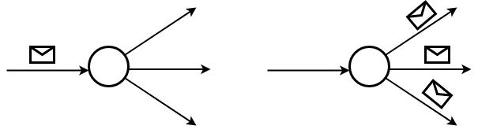
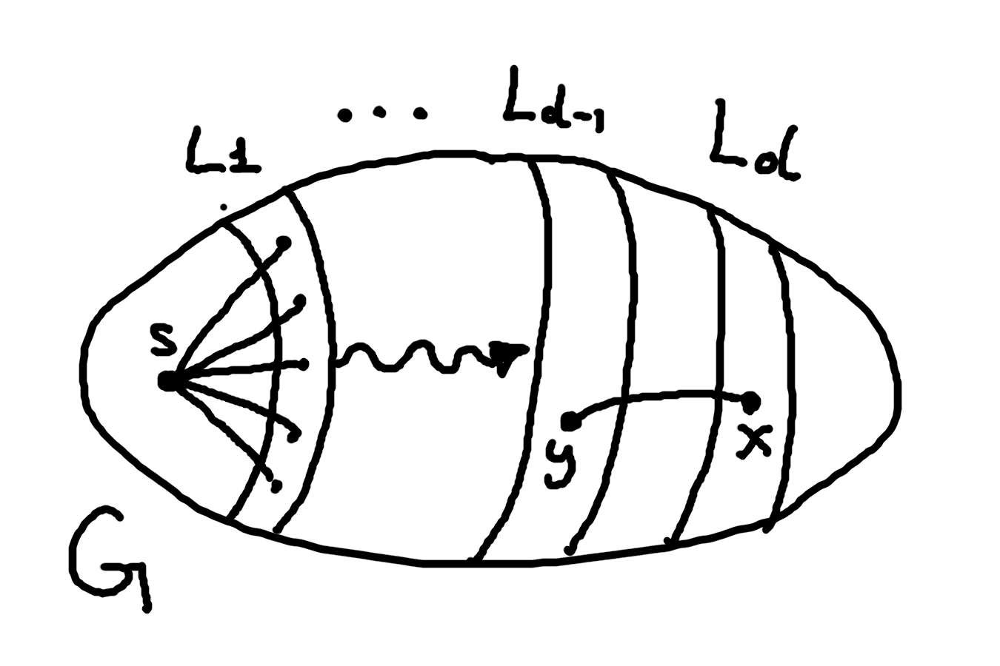

ADRC - Lesson 03
Indice
1 Single source broadcast problem
Come introdotto nella lezione 2, in un sistema distribuito non ha senso parlare di input/output di un algoritmo,
besì di configurazioni iniziali e finali ammissibili del sistema, rispettivamente.
Inoltre per un protocollo distribuito si parla di assunzioni1 sotto le quali il protocollo deve lavorare.
Definiamo quindi il problema del broadcasting a singola sorgente come segue:
Dato grafo non diretto \(G=(V,E)\), un messaggio \(m \in \lbrace 0,1 \rbrace^\star\) e una funzione di stato \(state: V \rightarrow \lbrace \texttt{informed},\texttt{not_informed} \rbrace\),
si vuole progettare un protocollo che propaghi il messaggio a tutti i nodi.
- configurazioni iniziale \(\exists ! s \in V : state(s) = \texttt{informed}\)
- assunzioni
- unique initiator
- totale reliability
- bidirectionale links
- \(G\) is connected
- configurazioni finali \(\forall v \in V \;\; state(v) = \texttt{informed}\)
Necessario specificare che i nodi passano dallo stato not_informed ad informed nel momento in cui ricevono un messagio.
Si osservi che mentre possono esistere \(n\) configurazioni iniziali possibili, la configurazione finale è unica.
Inoltre, è sottointeso che lo unique initiator corrisponda al primissino nodo informato.
In realtà questo non è sempre vero, potrebbe capitare un problema in cui l'initiator non corrisponda col primo nodo informato.
Una volta progettato il protocollo, si richiede:
- un'analisi della correttezza, ovvero se il protocollo porta a termine il suo task
- verificare se termina: non è detto che se un protocollo completi il suo compito allora necessariamente termini la sua esecuzione
- calcolare la sua message complexity
2 Flooding protocol
Una prima idea banale è la seguente: se un'entità riceve un messaggio allora lo invia ai suoi vicini. Intuitivamente questa idea porterà ad una configurazione finale, basandosi sul fatto che il grafo è connesso.

Figura 1: Idea protocollo
Perciò, possiamo definire lo stato INITIATOR nel quale si trova l'unico nodo inziale col messaggio il quale si dovrà preccupare di
far iniziare il protocollo, e lo stato SLEEPING in cui i si trovano gli altri nodi in attessa di ricevere il messaggio.
Una possibile descrizione del protocollo potrebbe essere la seguente:
# protocollo trivial-flood
if self.state == "INITIATOR":
spontaneously:
send(self.message) to N(self)
elif self.state == "SLEEPING":
receiving(m):
send(m) to N(self)
Code 1:Pseudocodice python-like
2.1 Correttezza
THM se eseguiamo il protocollo trivial-flood sotto le assunzioni 1,2,3,4, esiste un tempo \(t \in \mathbb{R}^+\) tale che
ogni nodo di \(G\) ha ricevuto il messaggio \(m\) almeno una volta, ovvero
\[ \forall v \in V \;\; state(v) = \texttt{informed} \]
Proof: sia \(L_d\) l'insieme di nodi distanti esattamente \(d\) dalla sorgente \(s\).
Si vuole dimostrare per induzione su \(d\) che esiste un tempo \(t_d\) tale che tutti i nodi in \(L_d\) hanno ricevuto almeno una volta il messaggio,
ovvero che lo stato dei nodi al tempo \(t_d\) sia \(state_{t_d}(v) = \texttt{informed}\), per ogni \(v \in V\).
Per \(d = 0\) è banale in quanto \(L_0 := \lbrace s \rbrace\).
Perciò come base prendiamo \(d = 1\).
Per definizione avremo che \(L_1 \equiv N(s)\).
Per come è descritto il protocollo, la srogente \(s\) a un certo punto invierà in maniera spontanea il messaggio a tutti in nodi in \(N(s)\), ergo in \(L_1\).
Dato che stiamo sotto l'assunzione di total reliability siamo certi che non ci saranno failures durante al trasmissione, quindi per \(d=1\) certamente
esisterà un istante \(t_1 \in \mathbb{R}^+\) entro il quale tutti i nodi in \(L_1\) verranno informati.
Supponiamo ora che l'ipotesi sia vera fino a un certo \(d-1\); si vuole dimostrare che sia vera anche per \(d\), ovvero che
\[ \forall x \in L_d \implies \exists t_d \in \mathbb{R}^+ : state_{t_d}(x) = \texttt{informed} \]
Consideriamo un qualsiasi nodo \(x \in L_d\), allora per definizione esisterà un nodo \(y \in L_{d-1}\) tale che \((y,x) \in E\) (sfruttando
anche l'ipotesi di bidirectional links).
Se \(y \equiv s\) allora vuol dire che \(x \in L_1\), riconducendoci quindi al caso base.
Se invece \(y \not\equiv s\), allora certamente \(y\) avrà ricevuto il messaggio mentre era nello stato SLEEPING, e per definizione
del protocollo \(y\) avrà inviato il messaggio al suo vicinato \(N(y)\), compreso \(x\).
Sfruttando ancora l'ipotesi di total reliability sappiamo che il messaggio arriverà in un tempo finito e intatto a \(x\) tramite \(y\).

Infine sfruttando l'ipotesi di connettività di \(G\) sappiamo che \(\forall v \in V \exists k \in \mathbb{N}\) con \(k \leq diam(G)\), tale che \(v \in L_k\) \(\square\).
2.2 Miglioramento protocollo
Per come è stato descritto, il protocollo precedente porta a termine il suo task, però non termina mai. Inoltre, quando un nodo instrada un messaggio ricevuto a tutto il suo vicinato, esso rispedice una copia superflua anche al suo mittente (per via dei bidirectional link). Per ovviare a questo bastano le seguenti modifiche:
- Se nodo ha ricevuto almeno una volta il messaggio passa in uno stato
DONE, nel quale non ci sarà più bisogno che inoltri ulteriori messaggi (perchè è già stato fatto in precedenza) - Un nodo che riceve un messaggio non lo inoltra a chi glielo ha inviato. Sappiamo che un nodo può distinguere i nodi agli estremi dei suoi archi incidenti grazie all'assunzione di bidirectional links, ovvero \(\forall x \in V \left[\forall y \in N(x) \;\; \lambda_x(x,y) = \lambda_x(y,x) \right]\)
# protocollo trivial ottimizzato
if self.state == "INITIATOR":
spontaneously:
send(self.message) to N(self)
self.state = "DONE"
elif self.state == "SLEEPING":
receiving(m):
send(m) to N(self) - { source }
self.state = "DONE"
elif self.state == "DONE":
None
Code 2:Pseudocodice python-like protocollo ottimizzato
2.3 Message Complexity
Come già accennato in precedenza, non ha senso parlare di time complexity in un sistema che non è sincrono.
Perciò analizzeremo la complessità del protocollo in termini di numero di messaggi trasmessi entro il completamento del task.
Verranno proposte due analisi abbastanza semplici sul protocollo ottimizzato2, le quali porteranno ad un risultato asintoticamente uguale, ma con un livello di dettaglio differente.
- Analisi 1
Si osservi che per via del ritardo di trasmissione, su ogni arco possono essere trasmessi al più due messaggi durante l'intero protocollo. Sappiamo che un nodo non invierà mai un messaggio attraverso l'arco da cui l'ha ricevuto, però per via del ritardo di trasmissione potrebbe capitare di inviare un messaggio su un arco nel quale sta già viaggiando un altro messagio in entrata. Fatta questa premessa, nel caso peggiore verranno inviati due messaggi per ogni arco, perciò il protocollo avrà complessità al più \(2m \in O(m)\).
- Analisi 2
Nel caso precedente si è calcolata la complessità in base gli archi. Volendo è possibile calcolare la complessità in base ai nodi. Definiamo con \(msg(v)\) il numero complessivo di messaggi inviati dal nodo \(v\), e con \(msg(\texttt{FLOOD})\) il numero di messaggi trasmessi durante il protocollo (ovvero la sua message complexity).
\begin{align*} msg(\texttt{FLOOD}) &= \sum_{v \in V} msg(v)\\ &= msg(s) + \sum_{v \in V - \lbrace s \rbrace } msg(v)\\ &= |N(s)| + \sum_{v \in V - \lbrace s \rbrace } |N(v)| - 1\\ &= |N(s)| + \sum_{v \in V - \lbrace s \rbrace } |N(v)| - \sum_{v \in V - \lbrace s \rbrace } 1\\ &= \left( \sum_{v \in V} |N(v)| \right) - (n-1)\\ &= \left( \sum_{v \in V} deg(v) \right) - (n-1)\\ &= 2m - n + 1 \end{align*}
Come si può vedere, da questa analisi emerge che il protocollo risparmia un fattore \(n-1\) di messaggi trasmessi.